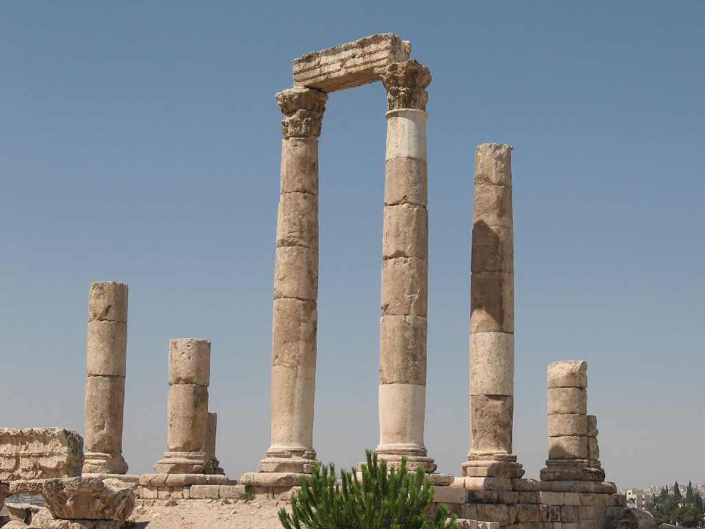
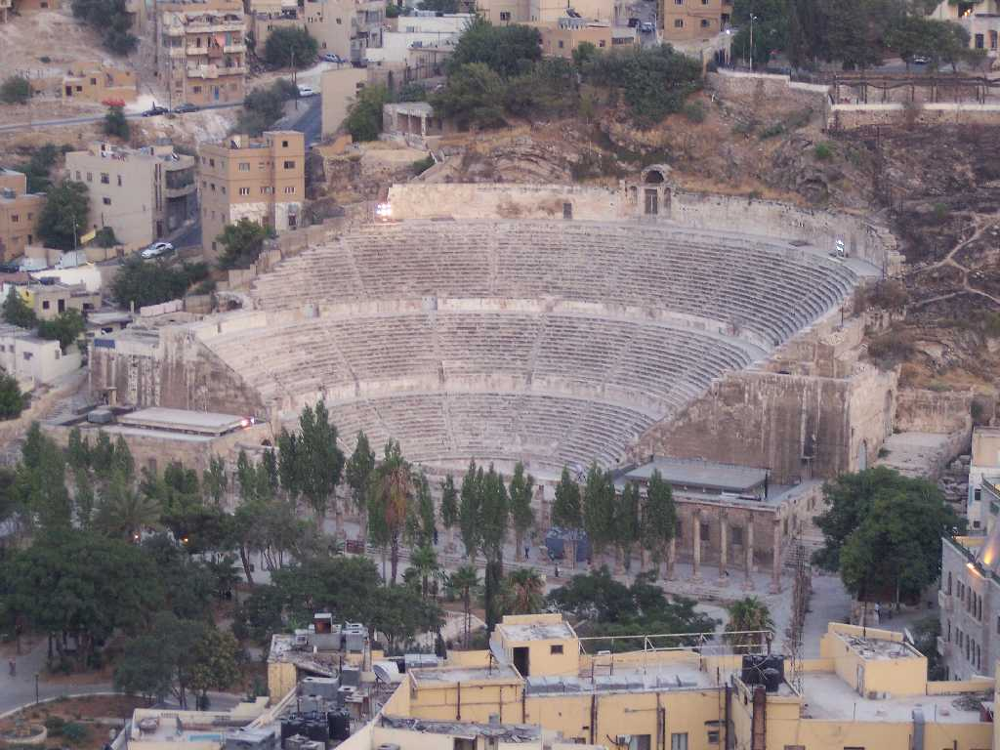

The Citadel hill of Amman
石器時代の９０００年前には人の定住地で古代エジプトの統治を受けたときにアメン神のアンモンの名で都市が建設された世界で最も古い都市のひとつである 城砦の丘は古来から人の居住があり軍事的政治的に重要な場所で青銅器時代ローマ帝国ビザンチン帝国イスラム時代まで遡る

Roman Theatre
ローマ時代の１３８年から１６１年に建設されたもので現在でも６０００人収容でき劇場やスポーツ等に利用されている